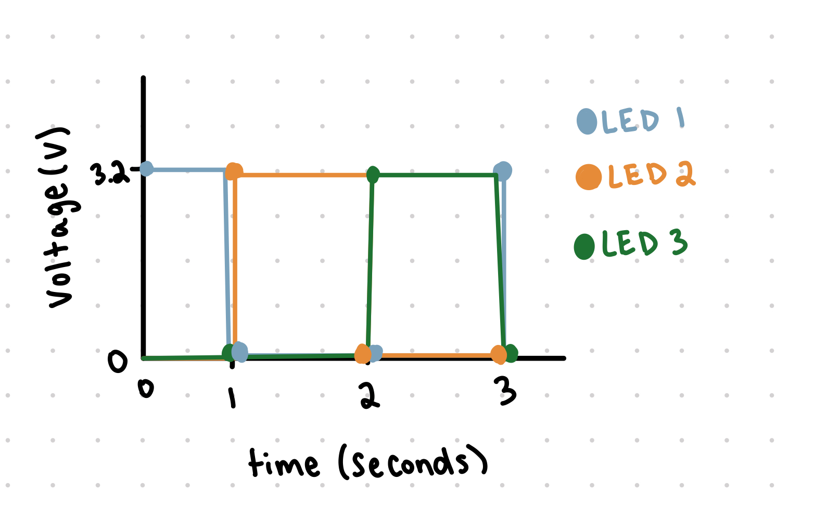
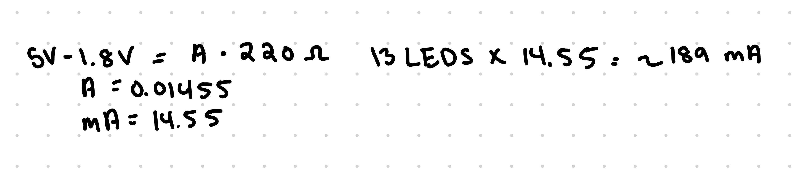

Below is all the documentation for assignment 1! To my left is my circut board
Below is all the documentation for assignment 1! To my left is my circut board
Using the V = IR equation where V is 5V, the LED drop is 1.8 and I is 20mA, I plugged in those values and got 5V - 1.8V = 20mA*R. After reducing that down I got, 3.3V = .02A* R. After dividing voltage by Current, I got a resistance of 165. Since I didn't have a resistance of 165 in my pack, I went higher to make sure the current didn't get too high and went with a resistor of 220.
void setup() {
// initialize digital pin LED_BUILTIN as an output.
pinMode(13, OUTPUT);
pinMode(12, OUTPUT);
pinMode(8, OUTPUT);
}
// the loop function runs over and over again forever
void loop() {
// turns on port 13 (LED 1) on
digitalWrite(13, HIGH);
delay(1000); // wait 1 second
// turn LED 1 off
digitalWrite(13, LOW);
// Turns on port 12 (LED 2) at the same time
digitalWrite(12, HIGH);
delay(1000); // wait 1 second
// turns off LED 2
digitalWrite(12, LOW);
// Turns on port 8 (LED 3) at the same time
digitalWrite(8, HIGH);
delay(1000); // wait for a second
// Turn off LED 3
digitalWrite(8, LOW);
}
My code turns on one LED at a time, waits a second, and then turns that LED off, while turning another one on for 1 second. This loop will repeat over and over again while turning on all 3 LEDS independantly.

For my LEDs, i had them blink in a pattern 1 at a time. I started with LED 1, then LED 2, and then LED 3. Every second one LED wuld turn on while the one before it would turn off. I chose to do this pattern because then it would be very clear that all LEDs could blink independently
Q1: Draw a graph where the X axis is time and the Y axis is voltage across the LEDs. Draw a line for each of your 3 LEDs
MAt second 0, the LED 1 will be on since it starts at high voltage automatically, then as you go to second 1, LED 1 will drop to low voltage (0) and LED 2 will rise to high voltage. At second 2, the LED 2 will drop to low voltage (0) and LED 3 will raise to high voltage. Then at second 3, LED 3 wil drop to low voltage and LED 1 will be back to high voltage (3.2). My highest voltage is 3.2V on this graph because there was 5V of power to my LEDS but the red LEDS have a 1.8V drop so the highest they could be is 3.2 V
Q2: How many LEDs could you blink independently with your Arduino? How much current would that draw?
There are 13 total ports on our Arduino so we could independently blink 13 LEDS. That would draw approximately 189mA of current. To figure that out, I did V=I*R where V=5V-1.8V = 3.2V and R=220 (resistor I used earlier). After plugging everything in, I got 3.2V=I*220 and I=0.01455A or 14.55mA. Then I multiplied 12 LEDS by 14.55mA of current to get about 189mA. Below is a photo of my work
Q3: How fast do you need to blink your LEDs until you no longer can tell that they are blinking?
You need to blink your LEDs at 10, or 0.1 seconds, to be able to no longer be able to see them blinking